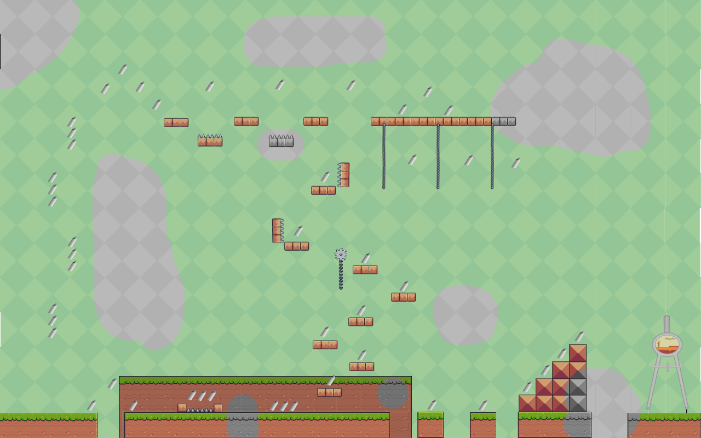
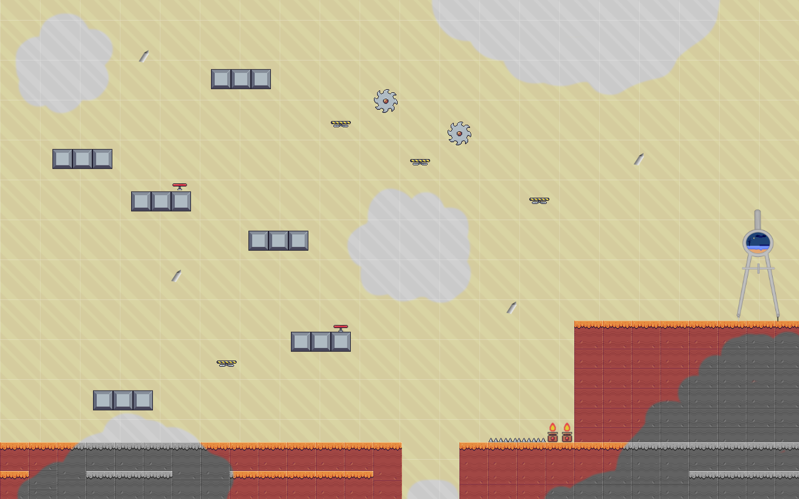
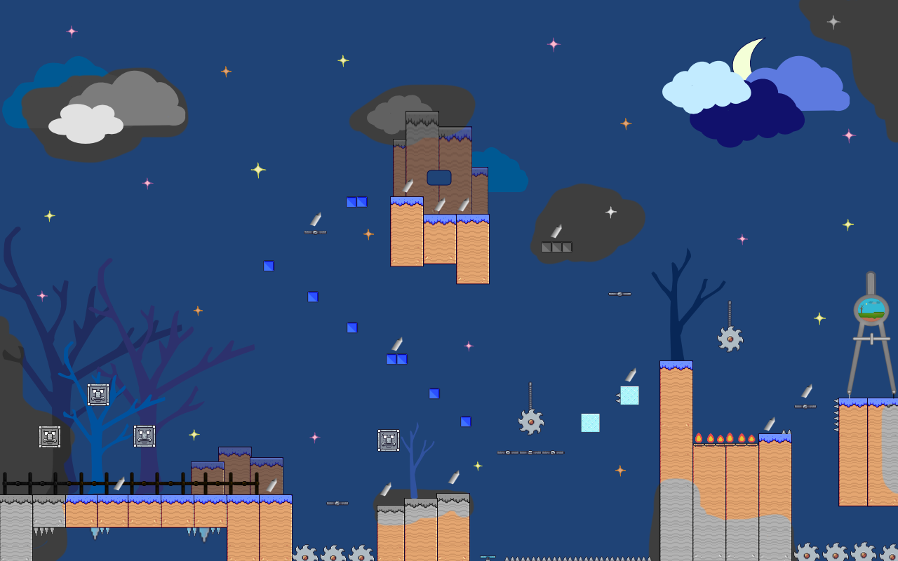

Las tierras de Gemeotry se han sumido en el caos cuando Berub, la goma, harta de ser la única en Gemeotry que no posee una forma geométrica, ha decidido borrar con su poder
todo el reino. Es entonces, entre la desesperación de los habitantes de Gemeotry que asciende un héroe, el triángulo Letriang, que se embarca en la aventura de recolectar carboncillos de poder
para devolverle al reino su antiguo esplendor y detener a la malvada goma.
Letriang
Forma: Triangular.
Color: Amarillo-verdoso.
Forma de atacar: Con el vértice superior.
Personalidad: Alegre, valiente, aventurero.
Berub
Forma: Goma de borrar.
Color: Gris y azul.
Forma de atacar: Borrando, con la parte superior de su cabeza.
Personalidad: Gruñon, pesimista, solitario.
Escenarios

Escenario de Verano
Letriang comienza su aventura por estas tierras. El poder de Berub ya ha comenzado a hacer estragos aquí, pues comienzan a
observarse zonas borradas de un color gris apagado. Además, Berub ha roto el reino en pedazos que solo pueden conectrase con los cómpases transportadores,
pero para activarlos necesita el poder de los carboncillos.
¿Podrá Letriang conseguir suficientes?

Escenario de Otoño
Tras superar las tierras de verano, Letriang se adentra en las inhospitas tierras del otoño.Dicen que cuando se desperdigaron los carboncillos
por el reino, los que terminaron en esta zona acabaron el lugares de díficil acceso.
Decidido, Letriang aprieta el paso...

Escenario de Invierno
No fue fácil pero Letriang ha conseguido superar las tierras del otoño y ahora se encuentra muy cerca del castillo, donde Berub reside.Sin embargo,
ante él se extiende el mayor de los obstáculos, las tierras del invierno. Se cuenta que nadie que haya pasado por estas tierras ha vuelto para contarlo
pues la zona se encuentra plagada de trampas letales.